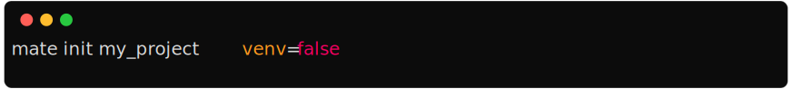
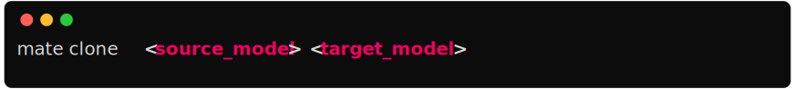
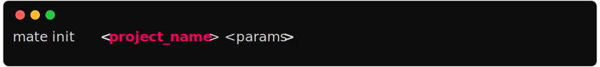
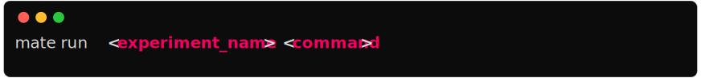
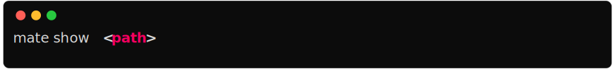
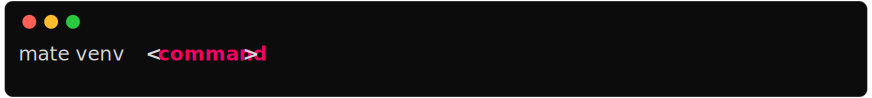

🧉 Maté
Modularize your deep learning project to improve reproducibility
The following commands work within a mate project folder, that is, where the
mate.json file is located. This file will be generated by the
init command (see below).
Cli Parser
Mate’s cli parser is a simple parser that parses the command line arguments and calls the appropriate method on the Mate class.
Notice that for boolean arguments, you can use either false or False, true or True. And for None you can use either null or None.
Example


Params - source_model : str : Path to the
source model - target_model : str : Path to the target model
Clones a module

Params - path : str : Path to the module to
create - name : str : Name of the module to create
Creates a new module

Params - source : str : Path to the object to
export
Exports a function/class from a module

Params - project_name : str : Name of the
project - params : str : Parameters to pass to the project.
These are the same key-value pairs that are in the
mate.json file (check out that section).
Creates a new mate project in the current folder.
Example
mate init my_fancy_project venv=false

Params - url : str : URL to the package to
install
Installs a module from url. The URL must be a git repository and point to the full path of the module.

Params
Prints the markdown documentation of the project

Params - commands : str :
Executes inside the python venv
mate pip install numpy

Params - target : str : Path to the module to
remove
Removes a module

Params - path : str : Path to the module to
rename - name : str : New name of the module
Renames a module.

Params
Prints results

Params - experiment_name : str : Name of the
experiment to run - command : str : Command to run
Runs an experiment with the given command

Params - path : str : Path to the module to
show
Shows information about a module or experiment.

Params - svg : bool : =False
Prints a summary of the mate project.

Params - command : str : Command to run in the
virtual environment
Executes inside the python venv